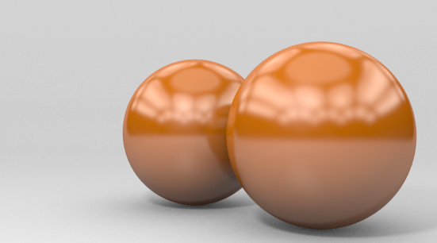
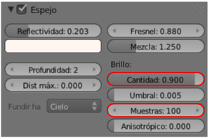
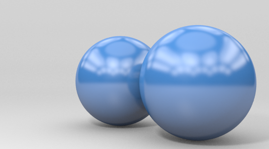
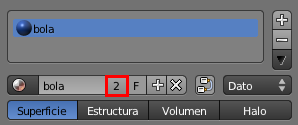
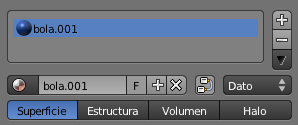
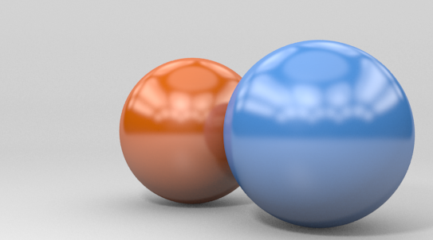

Materiales vinculados
Cuando a un objeto le asignamos un material de los que ya están creados en la escena se produce un vínculo por el cual, si variamos un parámetro de ese material, el cambio afectará a todos los objetos que lo contengan.
Del mismo modo, cuando duplicamos ("Shift_D") un objeto el material queda enlazado al original y a la copia. Esto obedece a la lógica y está bien que sea así. Sin embargo en algunas ocasiones interesa duplicar toda esa información pero con la posibilidad de hacer después cambios particulares. Por ejemplo, imaginemos que hemos creado un material cromado con gran variedad de parámetros. Ahora queremos asignar ese mismo material a otro objeto pero le queremos hacer una variación en el color Difuso. En tal caso es necesario asignar el material primero para después desvincularlo y así originar un nuevo material con el cambio deseado.
Vamos con un ejemplo.
Tenemos una esfera con el material metálico de color anaranjado.
Este render contiene un detalle que aún no hemos estudiado; se trata de hacer que la imagen del entorno virtual se desenfoque ligeramente para darle un aire menos pulido al objeto. Esta no es una propiedad de la textura sino del material de la bola. Lo editamos con el parámetro Cantidad en la botonera Espejo. Este parámetro lleva implícita una sensación visual de ruido que se soluciona aumentando el valor de Muestras.
La segunda bola ha adquirido este material porque se ha duplicado ("Shift_D") la primera o porque le hemos asignado ese material desde el listado de materiales ya creados. En cualquiera de los dos casos, al alterar el material de una de las bolas se produce el cambio en la otra; por ejemplo un cambio en el color Difuso.
Blender nos informa de que el material está enlazado a dos objetos con un número "2" junto al nombre del material.
Suponemos que tenemos seleccionada la bola de atrás. Al pulsar sobre ese número "2" el material de esa bola se independiza y adquiere autonomía propia. Lo primero que hace Blender es darle un nombre diferente. En nuestro caso el material original se llama bola y al desvincularse Blender llama al nuevo material bola.001.
Le damos un nombre más apropiado como puede ser bola_naranja (al antiguo bola lo podemos renombrar bola_azul). Al editar ahora el color Difuso de la bola de atrás le cambiaremos el color manteniendo el resto de las propiedades heredadas.
